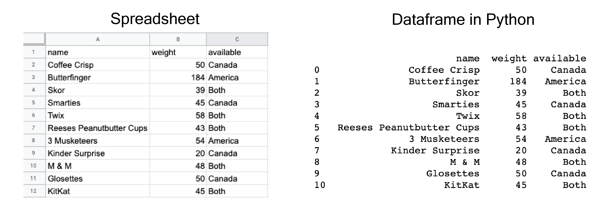
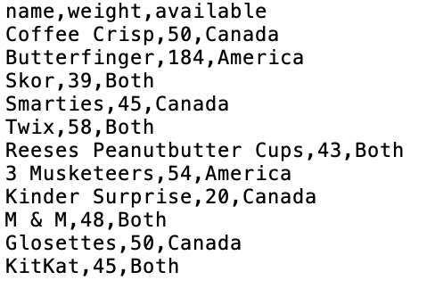

What is a dataframe?¶
See also
See the accompanied youtube video at the link here.
Often, the first thing we need to do in data analysis is to load in data.
In this case, we will be using the programming language Python.
When we bring spreadsheet-like data, into Python, it is generally shaped like a rectangle (think of Microsoft Excel tables for example) it is represented as what we call a dataframe object. It is very similar to a spreadsheet.
The rows in a dataframe are the collected observations.
So here for example, one observation is this row that contains the name of the candy “Smarties”, the weight which is 45 grams and where it’s available, in the country Canada.
In the dataframe the columns are variables.

When we work with information, it must be stored in a manner that is organized, readable and accessible.
An example of a variable, is where the candy is available; either in Canada, America or both countries can be the values.
What is a CSV file?¶
The first kind of data we will learn how to load into Python as a dataframe is the spreadsheet-like comma-separated values format (.csv for short).
{kind=link}
These files have names ending in .csv, and can be opened open and saved from common spreadsheetlike programs like Microsoft Excel and Google Sheets.
For example, we will be importing the .csv file you saw above named “candybars.csv”.
If we were to open this data in a plain text editor, we would be able to see each row on its own line, and each entry in the table separated by a comma.
Let’s apply what we learned!¶
1. What are dataframes comparable to?
a) Text Documents
b) Excel Sheets
c) Picture Frames
2. If a csv file was opened in a plain text editor, what character would be separating the values of each column?
a) :
b) ;
c) ,
Solutions!
a) Excel Sheets
c)
,